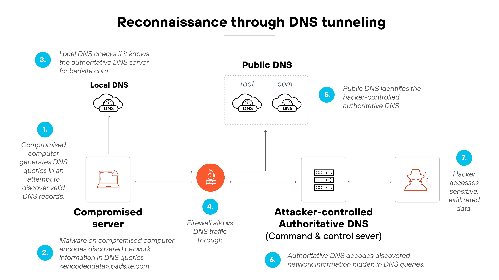

Description technique
Le DNS Tunneling est une méthode permettant d’exfiltrer des données discrètement par les requêtes DNS.
La méthode consiste à masquer des données ou des commandes dans des requêtes DNS pour éviter leur détection. Les données peuvent être encodées, par exemple en Base32 ou Base64, ou chiffrées.
Anecdote et exemple
